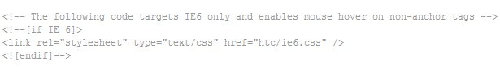

Created : 10/02/2010
Updated : 10/16/2010
By: Keliah
Email: keliahdesign@gmail.com
Thank you for purchasing my theme. If you have any questions that are beyond the scope of this help file, please feel free to email via my user page contact form here. Thanks so much!
NOTICE : you'll find an additional file in the htc subfolder of each version, this "csshover3.htc" file is required only if you support Internet Explorer 6, if you remove it, the menu won't work at all under IE6.
Please note that in each folder HTML files are exactly the same. This footer has a fixed layout based upon the 960gs grid.
You probably have heard or used drop down menus, here the principle is the same with the difference that the content appears above the menu links.
Let's begin with the containers available for the "drop ups", you can use from the smallest (140px) to the largest (420px) container. Then, within these containers, you can organize your content in 1, 2, or 3 columns.
For easier understanding, we'll use the regular expression "drop downs".
These containers must be placed within a menu list item as follows :
<li> <a href="yourlink">yourlink</a>
CONTAINER COMES HERE
</li>
And here is the list of the containers available :
To add a 420px drop down :
<div class="dropdown_3columns">
CONTENT IN 1, 2 OR 3 COLUMNS
</div>
To add a 280px drop down :
<div class="dropdown_2columns">
CONTENT IN 1 OR 2 COLUMNS
</div>
To add a 140px drop down :
<div class="dropdown_1column">
CONTENT IN 1 COLUMN
</div>
Then, within these containers, you can use from 1 up to 3 columns, but don't forget to check if your container is large enough for the columns you include. You'll notice that they are smaller than the containers, it's because of the paddings so the content doesn't stick to the edges.
Here are the choices available :
<div class="col_1">
HERE COMES YOUR 130 PX WIDTH CONTENT
</div>
<div class="col_2">
HERE COMES YOUR 270 PX WIDTH CONTENT
</div>
<div class="col_3">
HERE COMES YOUR 410 PX WIDTH CONTENT
</div>
The main file for this footer is "footer.css", but you'll also find a "reset.css" which should be included first in your HTML and a "content.css" in variants containing some texts.
You can remove safely those 2 files (reset and content) but I highly recommend using a reset which should be called first.
The footer.css is structured, there are labels to help you find the section you need to modify :
/* 01 FOOTER - GENERAL STYLES */ some code /* 02 FOOTER - DROP DOWN MENU (DROP UP) */ some code /* 03 FOOTER - COLUMNS CONTENT */ some code
You'll find in each variant a folder called "htc", it contains 2 files :
If you don't want to support IE6 at all, simply delete the htc folder and in the html page, you can remove the commented content :
As you can see above, the file is divided in 3 sections :
This item comes with color variants, each one has it's own folder, but you may want to create your own color scheme. For this example, we'll see the black variant : open "footer.css" and scroll down until you find the label #footer. This class defines the color of the main footer bar with the following attributes :
background:#161616;
border-top: 1px solid #333333;
/* CSS3 Stylings - Creates the double top border */
-moz-box-shadow: 0px -1px 0px #161616;
-webkit-box-shadow: 0px -1px 0px #161616;
box-shadow: 0px -1px 0px #161616;
/* CSS3 Stylings - Creates the gradient background */
background: -moz-linear-gradient(top, #222222, #111111);
background: -webkit-gradient(linear, 0% 0%, 0% 100%, from(#222222), to(#111111));
The "background" must be set for browsers which don't support CSS3 properties, in this case, we have the color #161616 and this value is overwritten by the CSS3 attributes in the case the user is using a recent browser supporting CSS3, so the 2 last lines define a gradient from the top (color : #222222) to the bottom (color : #111111).
A border-top is set to match the other colors using #333333.
All the above properties, as I said before, determine the colors of the footer container.
Now let's see the menu within the footer, I used a dark color scheme defined with the #footer_menu li class :
border-right:1px solid #111111;
border-left:1px solid #444444;
background:#3E3E3E;
/* CSS3 Stylings - Creates the gradient background */
background: -moz-linear-gradient(top, #3E3E3E, #313131);
background: -webkit-gradient(linear, 0% 0%, 0% 100%, from(#3E3E3E), to(#313131));
Again, the background color (#3E3E3E) is a fallback color for older browsers, then a lighter gradient is set using the #3E3E3E and #313131 colors. On mouse hover, this gradient is reverted :
background:#313131;
/* CSS3 Stylings - Creates the gradient background */
background: -moz-linear-gradient(top, #313131, #3E3E3E);
background: -webkit-gradient(linear, 0% 0%, 0% 100%, from(#313131), to(#3E3E3E));
}
Then we have this same dark scheme used in the drop down (or drop up) with the #footer_menu li:hover ul.dropup, .dropdown_1column, .dropdown_2columns and the dropdown_3columns classes :
background-color:#222222; border: 1px solid #111111;
I've used the following images, icons or other files as listed.
Once again, thank you so much for purchasing this theme. As I said at the beginning, I'd be glad to help you if you have any questions relating to this theme. No guarantees, but I'll do my best to assist. If you have a more general question relating to the themes on ThemeForest, you might consider visiting the forums and asking your question in the "Item Discussion" section.
Keliah